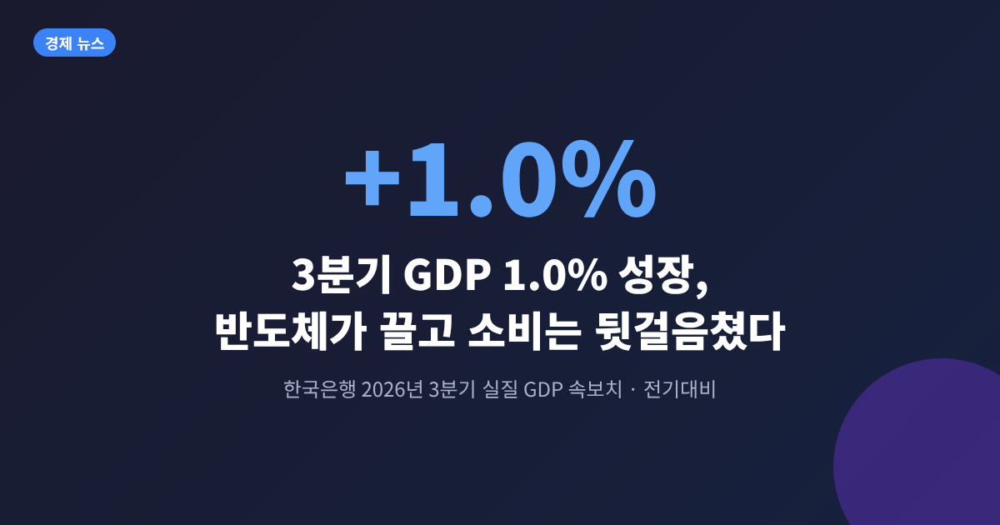
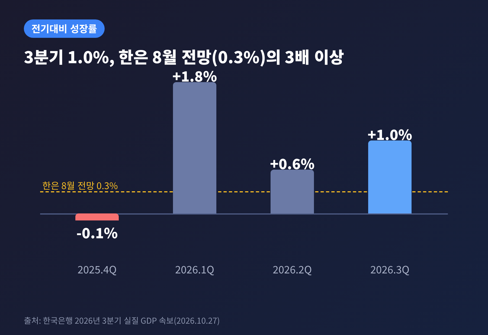
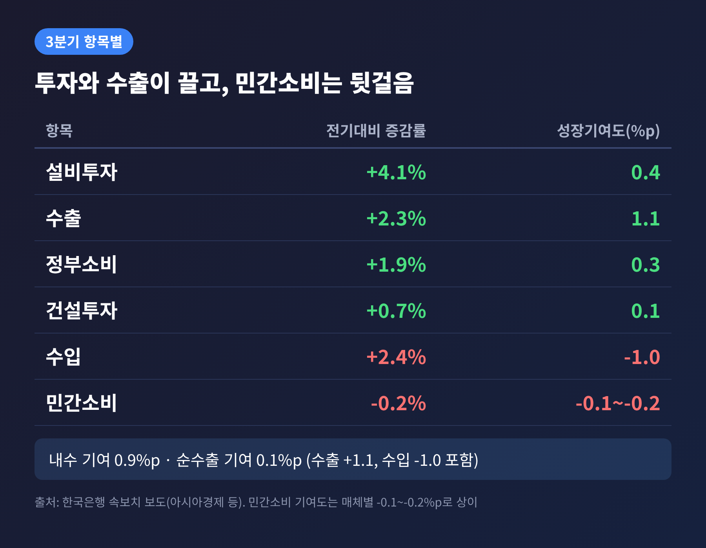
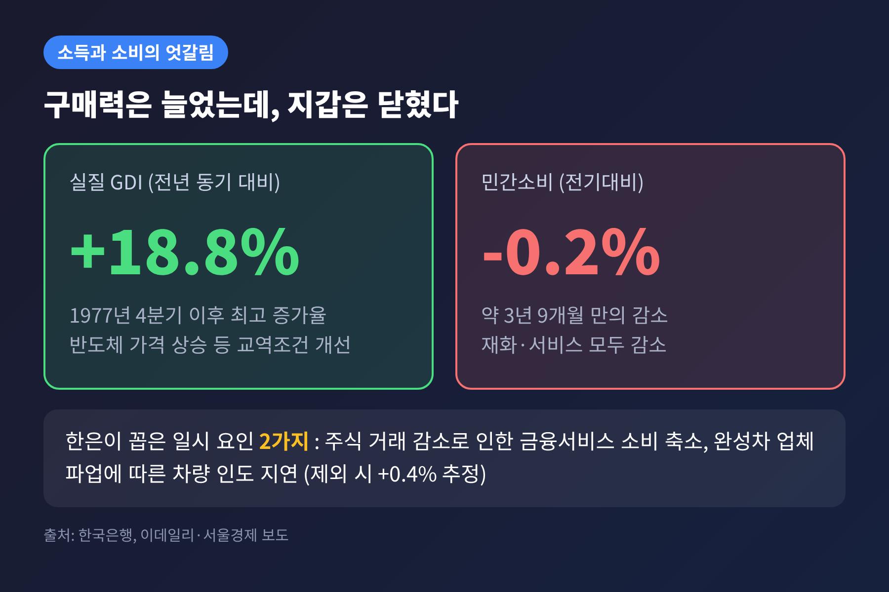
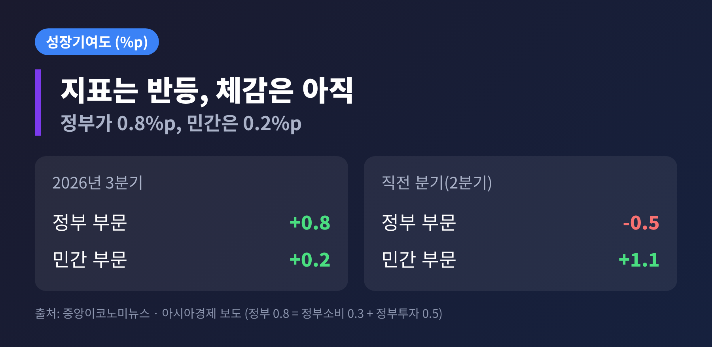
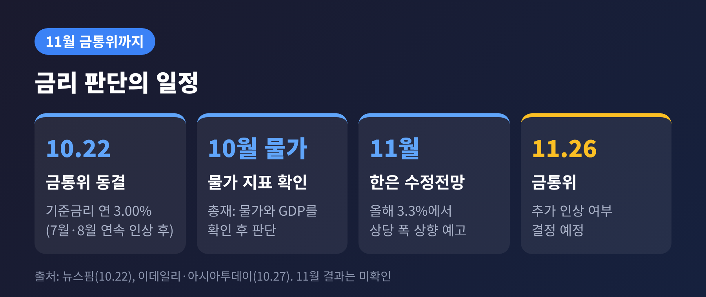

3줄 요약
이번 글에서는 3분기 GDP 속보치의 숫자를 짚고, 이 성장을 반등으로 볼지 착시로 볼지 정리해 보겠습니다. 11월 금통위와 시장에 주는 의미도 함께 살펴봅니다.
한국은행은 10월 27일 '2026년 3분기 실질 국내총생산(속보)'을 발표했습니다. 직전 분기 대비 성장률은 1.0%입니다. 전년 동기와 견주면 3.4% 늘었습니다.
한은이 8월에 내놓은 전망치는 0.3%였습니다. 0.7%포인트 높은 결과입니다. 이데일리는 시장 예상치를 0.8%로 전했으니, 시장의 눈높이도 넘어선 셈입니다.
분기별 흐름을 보면 이렇습니다. 지난해 4분기에는 -0.1%로 뒷걸음쳤고, 올해 1분기 1.8%, 2분기 0.6%, 3분기 1.0%로 이어졌습니다. 전년 동기 대비로는 1분기 3.8%, 2분기 3.7%, 3분기 3.4%로 세 분기 연속 3%대입니다.

항목별로 보면 설비투자가 4.1% 늘었습니다. 반도체 제조용 기계 등 기계류가 중심입니다. 직전 분기 증가율이 0.2%였으니 속도가 크게 붙었습니다. 수출은 반도체와 기계·전기장비 덕에 2.3% 늘었습니다.
정부소비도 1.9% 증가했습니다. 물건비와 건강보험 급여비 지출이 늘어난 결과입니다. 보도에 따르면 2022년 4분기 이후 가장 높은 증가율입니다. 건설투자는 토목건설을 중심으로 0.7% 늘어, 한 분기 만에 증가로 돌아섰습니다.
성장기여도로 옮기면 그림이 더 선명합니다. 내수가 0.9%포인트, 순수출이 0.1%포인트입니다. 내수 안에서는 설비투자가 0.4%포인트, 정부소비가 0.3%포인트를 보탰습니다. 수출은 성장률을 1.1%포인트 끌어올렸지만 수입이 1.0%포인트 깎았기 때문에, 순수출의 몫은 작았습니다.
업종으로는 제조업이 2.0% 성장했습니다. 컴퓨터·전자·광학기기와 기계·장비가 늘었습니다. 서비스업은 0.2%에 그쳤고, 2분기의 1.0%에서 크게 낮아졌습니다.

이번 통계에서 가장 눈에 띄는 대비는 소득과 소비입니다. 실질 국내총소득(GDI)은 전기대비 3.4%, 전년 동기 대비 18.8% 늘었습니다. 1977년 4분기 이후 가장 높은 증가율로 보도됐습니다. 반도체 가격이 오르고 원유 등 수입 가격이 내려 교역조건이 좋아진 영향입니다.
반면 민간소비는 전기대비 0.2% 감소했습니다. 재화와 서비스가 모두 줄었습니다. 2022년 4분기 이후 약 3년 9개월 만의 감소입니다. 나라 전체의 구매력은 크게 불었는데, 가계의 지갑은 열리지 않았다는 이야기입니다.
한은은 일시적 요인을 짚었습니다. 이동원 경제통계2국장은 주식 거래가 줄어 증권사 수수료 등 금융서비스 소비가 줄었고, 완성차 업체 파업으로 차량 인도가 늦어졌다고 설명했습니다. 두 요인을 빼면 민간소비는 0.4% 증가했을 것이라는 추정입니다. 다만 한은도 소비 개선세가 강하다고 보기는 어렵다고 덧붙였습니다. 높은 가계부채와 고령화가 구조적 제약으로 꼽혔습니다.

첫째는 성장의 주체입니다. 성장기여도를 경제주체별로 나누면 정부가 0.8%포인트, 민간이 0.2%포인트입니다. 직전 분기에는 정부 -0.5%포인트, 민간 1.1%포인트였습니다. 예전엔 민간이 끌고 정부가 숨을 골랐다면, 이번에는 정반대입니다. 중앙이코노미뉴스는 이를 두고 성장의 상당 부분을 정부가 맡았다고 해석했습니다.
한은의 설명도 이 점과 맞닿아 있습니다. 정부가 중동전쟁 장기화에 대비해 상반기에 예산 집행을 아꼈다가, 3분기에 건설공사와 설비투자 지출을 늘렸다는 것입니다. 지출 시기가 옮겨 온 효과가 섞여 있을 수 있다는 뜻입니다. 다만 구체적으로 얼마나 되는지는 확인되지 않았습니다.
둘째는 성장의 질입니다. 컴퓨터·전자·광학기기가 성장에 기여한 비중은 약 60%로 추정되고, 그중 절반가량이 반도체라고 합니다. 데일리안은 반도체가 가격 상승 요인이 크고 고용 유발 효과가 크지 않다는 점을 지적했습니다. 수출 중심 성장이 가계의 일자리와 소득으로 이어지지 않으면 격차가 벌어질 수 있다는 우려입니다.
반등론의 근거도 만만치 않습니다. 설비투자가 4.1% 늘었다는 것은 기업이 앞으로의 수요를 보고 투자한다는 신호입니다. 씨티은행 김진욱 수석이코노미스트는 반도체 가격이 주가보다 중요한 선행지표라며, 10월 가격이 오르면 10~11월 수출도 좋을 것으로 내다봤습니다. 속보치라는 점도 기억해 둘 필요가 있습니다. 이후 잠정치에서 수치가 바뀔 수 있습니다.

한은 설명대로라면 계산은 단순합니다. 1~3분기 누적 성장률이 전년 동기 대비 3.6%이므로, 4분기가 0.0%여도 올해는 3.6%가 됩니다. 4분기에 1.4% 이상 성장하면 4%에 닿습니다. 한은은 8월에 올해 전망을 2.6%에서 3.3%로 올렸는데, 다음 달 수정전망에서 상당 폭 더 올릴 것으로 예고했습니다.
시장 전망은 3.6~3.8%로 모이고 있습니다. 씨티은행은 4분기를 0.83%로 가정해 3.8%를, 신영증권은 3.6~3.7%를 제시했습니다. 신한투자증권은 내년 3% 안팎을 전망했고, 교보증권은 수출이 올해 연말부터 둔화할 가능성을 짚었습니다.
관심은 금리로 옮겨 갑니다. 한은은 7월에 기준금리를 2.50%에서 2.75%로 올려 3년 6개월 만에 인상에 나섰고, 8월에 3.00%로 올렸습니다. 10월 22일에는 동결했습니다. 다음 금통위는 11월 26일입니다. 신현송 총재는 10월 소비자물가와 3분기 GDP를 확인하고 판단하겠다는 입장입니다.
인상 쪽 근거는 분명합니다. 9월 소비자물가 상승률이 2.9%, 근원물가가 2.8%로 목표 2%를 웃돕니다. 서울 아파트값은 전년 대비 15.0% 올랐습니다. 반대편에는 소비가 있습니다. 10월 소비자심리지수는 105.4로 1.2포인트 내렸습니다. KB증권 임재균 연구원은 금리 인상 효과가 나타나면 소비가 더 둔화할 수 있다고 봤습니다. 서울경제는 전문가들이 인상을 미룰 가능성이 낮아졌다고 본다고 전했습니다. 결론은 아직 열려 있습니다.

같은 날 코스피는 5,638.34로 3.09% 올랐고, 장중 5,700선을 터치해 매수 사이드카가 발동됐습니다. 원/달러 환율은 15시 30분 주간 종가로 1,323.7원이었습니다.
다만 이 반등을 GDP 덕으로만 돌리기는 어렵습니다. 헤럴드경제는 미국 앤트로픽의 기업공개 신청으로 AI·반도체 투자심리가 살아난 점과 GDP 호조가 겹쳤다고 전했습니다. 뉴스1은 앤트로픽 소식을 앞세웠습니다. 환율 움직임에 GDP가 얼마나 작용했는지는 확인되지 않았습니다.
정리하면 이렇습니다. 숫자는 분명히 좋았고, 그 숫자를 받친 기둥은 반도체와 정부 지출 두 개였습니다.
"반등이 맞는지는 소비가 답한다." 한은이 전망한 대로 4분기부터 배당과 내년 1분기 성과급이 가계로 흘러가면, 이번 숫자는 반등의 첫 장이 될 것입니다. 그러지 못하면 반도체 가격이 만든 일시적 고점으로 남을 수 있습니다. 다음 분기 통계가 그 답을 먼저 알려 줄 것입니다.
투자 권유 아님 안내: 이 글은 공개된 보도를 바탕으로 한 경제 해설이며 특정 자산의 매수·매도를 권유하지 않습니다. 투자 판단과 그 결과는 투자자 본인에게 있습니다. 수치는 속보치 기준으로 이후 수정될 수 있습니다.
출처: 한국은행 발표를 보도한 아시아경제, 한국일보, 한국경제, 이데일리, 데일리안, 아이뉴스24, 서울경제, 뉴스1, 뉴스핌 등(2026-10-22~27).